整理這份書單的時候，我先查了一件以為不用查的事。
Ina May Gaskin 的書，中文有沒有版本。
她是溫柔生產這條路上最重要的名字——美國田納西州 The Farm 助產社群的創辦助產師，接生超過一千兩百個孩子，「Gaskin 手法」是唯一以助產師命名並寫進產科教科書的接生技術。如果溫柔生產有祖師母，是她。
查完的結果是：一本都沒有。
不只她。我把這個運動的六位奠基作者一起查了。
溫柔生產的六位奠基作者，繁體中文譯本合計 0 本。
Ina May Gaskin、Michel Odent、Sarah Buckley、Grantly Dick-Read、Sheila Kitzinger、Janet Balaskas。經博客來與三民網路書店全站查詢，繁體與簡體皆查無譯本（2026 年 8 月）。
而同樣這六位，在日本的狀況是這樣的：
日文讀者讀得到 Ina May，中文讀者讀不到。這不是一個小落差。
它的意思是：中文讀者能買到的溫柔生產書，幾乎都是本土書寫，或是後來的作者對源頭的轉述。本土書寫非常珍貴——這份書單裡最好的幾本就是台灣人寫的。但思想的源頭，目前只能讀原文。
唯一的重要例外是 Frédérick Leboyer——他的《Birth Without Violence》有繁中版《溫柔的誕生》。除此之外，六位皆無。
所以這份書單混編三種語言。不是為了顯得國際，是因為不混編，那個落差就看不見了。
不要從頭讀到尾。跳到最像妳現在的那一段，先挑一本。
孕期會讀完的書，比妳現在想像的少。與其列一張二十本的清單放在手機備忘錄裡，不如挑一本真的會翻開的。
如果妳還在怕
恐懼是第一道門。在這個階段，資訊密度高的書往往沒有用——妳需要的是先看見「原來可以是那樣」，而不是先弄懂催產素怎麼運作。
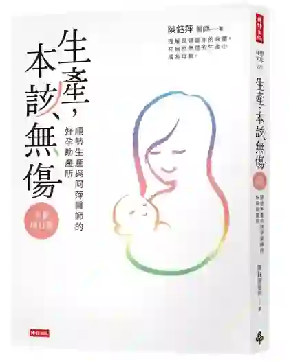
台灣唯一一本由開設助產所的產科醫師寫的書。她同時站在醫療體制的內與外，能誠實談出制度的限制與可能。
適合：對醫療介入有疑慮，但也不想完全離開醫療的妳。只買一本中文書的話，從這本開始。
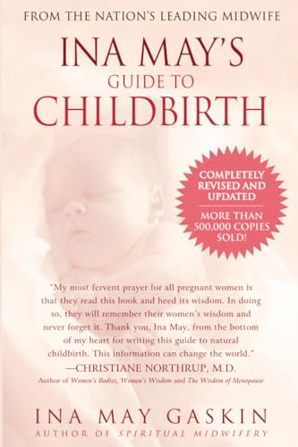
半本是真實的生產故事，半本是生理學。這個結構本身就是方法——她知道恐懼不會被知識說服，只會被別人的經驗鬆動。
適合：還在怕、需要先看見可能性的初產婦。故事的部分英文不難。
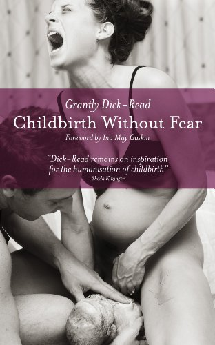
「恐懼—緊張—疼痛」三角的源頭。今天所有談「放鬆能減痛」的課程與書，思想根都在這裡，包括催眠生產。
適合：想弄清楚「怕痛」從哪裡來的人。可以只讀前三章。
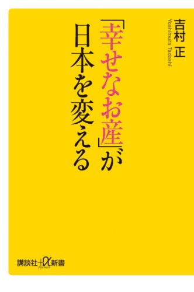
吉村正是愛知縣吉村醫院院長，日本自然分娩的象徵人物。代表作是《お産！このいのちの神秘》，但這本新書開本更好入手。
適合：讀得懂日文、想理解「一個產科醫師為什麼選擇不介入」的人。這個視角中文世界幾乎沒有。
如果妳需要一個科學靠山
這一區給「已經想清楚，但講不贏家人」的妳。婆婆說危險、先生說醫生比較保險——這時候需要的不是信念，是數字、年份與出處。
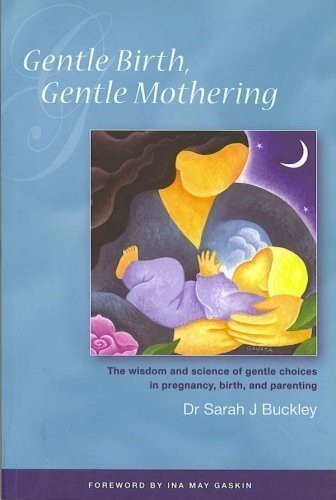
作者是家醫科醫師，也是四個孩子的母親，四胎都在家生。她把生產荷爾蒙寫到專業助產師也能引用的密度，卻仍讀得下去。另有免費 PDF 報告《The Hormonal Physiology of Childbearing》（2015）。
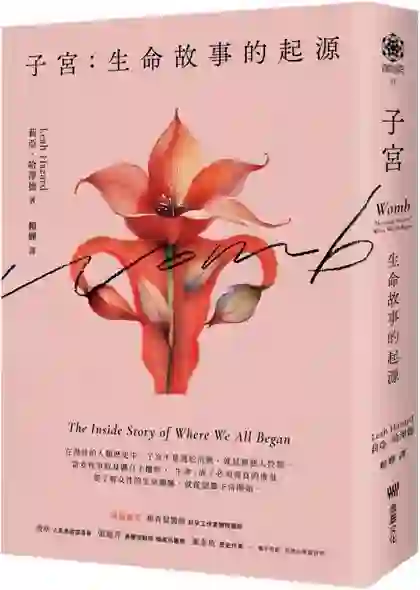
作者是執業十年以上的英國助產師。把子宮當成一個有歷史、有政治、也有未來（人造子宮）的器官來寫。
適合：想要一本中文的硬底子書。這是少數「中文買得到、而且夠硬」的。
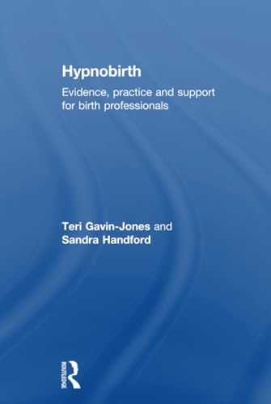
唯一一本寫給助產師與陪產員、而不是寫給孕婦的催眠生產書。有實證章節，客戶問「這個真的有用嗎」時能站得住腳。
如果妳想試試催眠生產
這一區的中文是空的——經查博客來與三民全站，台灣沒有任何一本催眠生產的中譯本或本土著作，簡體版同樣查無。而更需要知道的是：同樣叫催眠生產，四個主要流派對「痛」的承諾差很多。
Cochrane 2016 年的系統綜述（9 篇 RCT、2,954 位女性）發現：催眠生產組較少使用藥物止痛（RR 0.73），但疼痛強度、應對感、自然產率都沒有明顯差異，證據品質評為 very low。
也就是說——它確實可能讓妳少用藥，但它並沒有被證明會讓妳比較不痛。
所以真正該問的不是「催眠生產有沒有用」，而是「妳讀到的是哪一家、它跟妳承諾了什麼」。
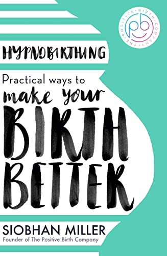
四本裡最誠實、也最去神祕化的一本。它不談潛意識重新編程，談子宮的縱走肌與環狀肌怎麼協同、腎上腺素怎麼打斷催產素。明確不承諾無痛。也是唯一從頭到尾把剖腹產與催生當成正常章節寫的。
適合：排斥「催眠」兩個字、覺得這太玄的理性型媽媽。如果催眠生產只讀一本，讀這本。
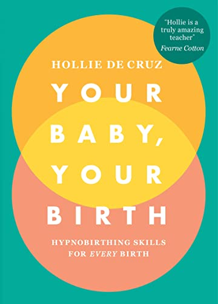
副標的 “Hypnobirthing Skills for Every Birth” 就是它的立場：催生、無痛、剖腹產都算數。
適合：這本是「只有自然產才算成功」那種隱形羞辱的解毒劑。
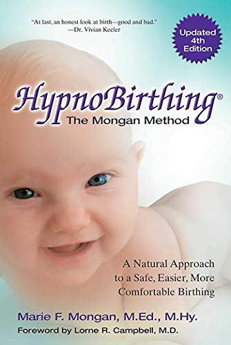
這是所有催眠生產的源頭文件，直接繼承 Dick-Read。它不只教技巧，它要重寫妳對生產的整個世界觀：contraction 改叫 surge（波湧）、pain 改叫 sensation。
但我要標一件事。這本書的文案寫著「大幅減少產痛、經常消除用藥需求」；而 HypnoBirthing Institute 官網現在已經改口，明白寫著「我們無法保證無痛生產」——但書裡的語言沒有跟著改。
媽媽讀到的書，比機構自己現在敢講的還要更滿。這正是有些人事後覺得「我照做了一切，為什麼還是這麼痛、是不是我不夠相信」的縫隙所在。
適合：想理解這個流派從哪來的人。如果妳要讀它，請把上面那段一起讀。
日本國立國會圖書館查詢結果：日本沒有出版過任何一本催眠生產的書，只有一篇 2017 年的期刊論文。
日本主流的非藥物放鬆分娩法是ソフロロジー式分娩（源自法國的 Sophrology），而且出版量很足。值得注意的是它的文案——2014 年主婦の友社那本的副標寫的是「痛みが少なく（比較不痛）」，不是「無痛」。
這個語言上的節制，我認為台灣值得借鏡。
如果陪產的是妳的伴侶
這一區只有一件事要做：把書交到真正要陪產的那個人手上。陪產的人需要的不是理念，是「現在該做什麼」。
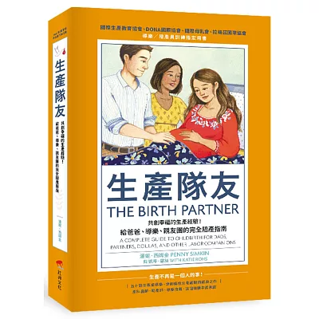
繁體中文市場唯一一本真正的陪產技術手冊。不談哲學，直接教陪伴者在每個產程階段該做什麼、說什麼、手放哪裡。原書是全球陪產員訓練的通用底本，台灣版另加了本地資源附錄。
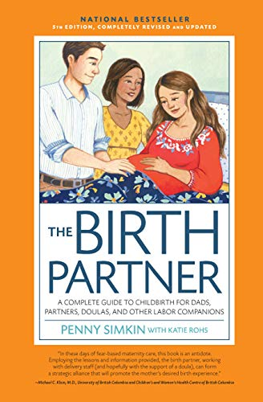
繁中版譯自較早的版本。如果陪產者讀得了英文，第 5 版內容更新。
如果妳上一胎受了傷
這一區的中文是空的。台灣每年有十幾萬個孩子出生，其中一定有相當數量的媽媽帶著沒被處理的生產經驗走出產房——但查證後，中文書市沒有一本專門處理生產創傷與修復的書。
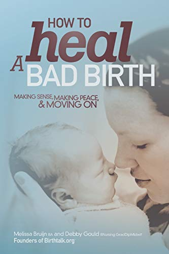
不是學術書，是自助修復手冊。兩位作者本身經歷過創傷生產，後來在澳洲成立了 Birthtalk。它處理很具體的事：那個記憶為什麼會一直回來、要不要看產程紀錄、下一胎怎麼準備。
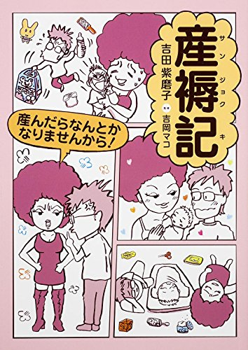
書名本身就是整本書的論點。日本社會對產後的期待和台灣很像——生完了，就該恢復了。這本是對那個期待的反駁。
這一區沒有中文書，不代表台灣沒有這個需求。它代表的是還沒有人寫。
如果妳正在這個處境裡，而以上兩本都不是妳能讀的語言——那不是妳的問題。妳可以先找人談，不必先找到一本書。
如果妳想理解制度為什麼變成這樣
為什麼台灣幾乎沒有助產師可以選？為什麼剖腹產率是 WHO 建議上限的兩倍多？這些不是妳個人的運氣問題，是制度的結果。這一區是中文最強的一區。
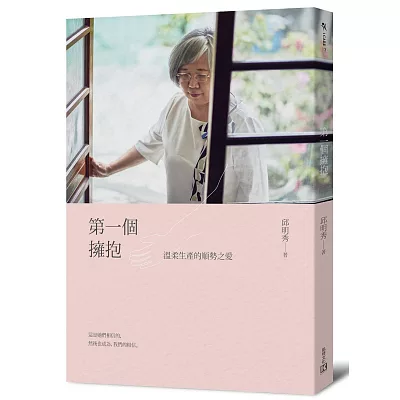
作者是台灣首位執業助產師，執照編號 000001。這本書是台灣助產專業斷層之後，重新接起來的第一手見證。
適合：想理解「為什麼台灣媽媽現在幾乎沒有助產師可選」的人。那個答案是有名字、有年代的。
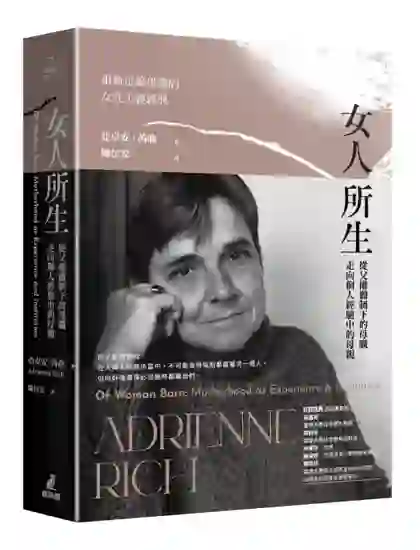
1976 年的女性主義經典，2026 年 5 月才有首度繁體中文全譯本——整整五十年。吳嘉苓、梁莉芳、許菁芳、諶淑婷四人導讀。
適合：已經生過、開始回頭問「我當媽媽的痛苦到底是我的問題，還是制度的問題」的女性。這本給的是結構性的答案。
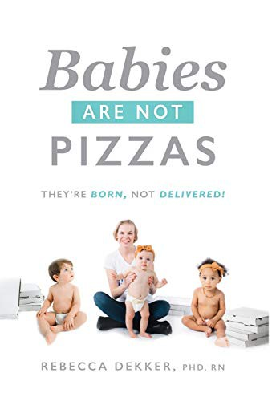
她兩次生產的創傷，以及後來如何創辦 Evidence Based Birth 的故事。台灣讀者最容易共感的一本醫療體制批判——她描述的醫院文化，跟這裡太像了。
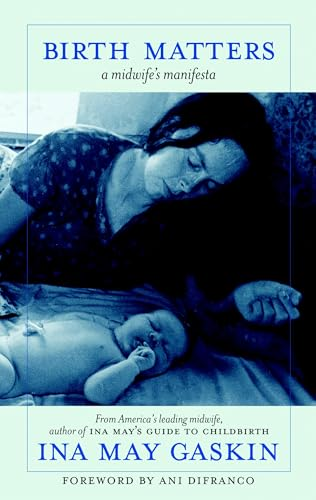
她的《Spiritual Midwifery》（1975）是歷史文獻，語言帶著那個年代的嬉皮味。這本是同一個立場的制度批判版，好入口得多。
如果妳想把生產當成一場通過儀式
這是整份書單最後、也最不容易被取代的一區。把生產理解成一場通過儀式（rite of passage），意思是：妳不會以同一個人的身分走出產房。不是因為妳變得更好，而是因為妳被穿過了。
Childbirth
as a Rite of
Passage
如果這份書單只能留一本，是這本。
作者是助產師出身的學者。全書分「The Weft／The Weave」兩部——經線與緯線——處理的正是儀式如何運作、現代醫療如何把它拆掉、以及要怎麼把它織回來。
適合：已經讀過幾本、覺得「知識夠了，但還是少了什麼」的妳。中文世界沒有對應的書。
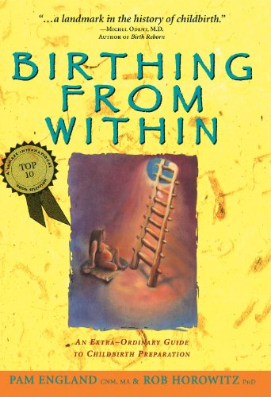
用畫畫、藝術、原型工作來準備生產，不走知識取向。它的前提是：妳的頭腦已經準備好了，是別的地方還沒。
適合：知識已經夠多、但心還沒鬆的女人。
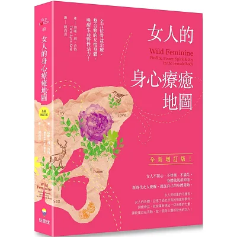
繁體中文市場最接近「子宮療癒」的專業書。作者是物理治療師出身，所以講骨盆是真的在講解剖，不是純能量語言——這讓它能同時說服身心靈讀者與理性讀者。
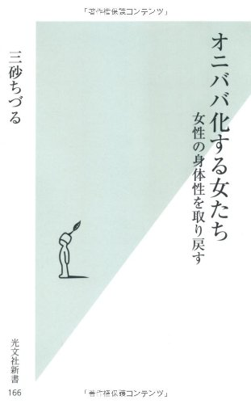
日本女性身心靈論述的爆點之作，也引發了大量批評——批評它把女性價值綁回生育、對不生育的女性不友善。
它確實是這個場域繞不過去的一本。但如果妳要讀它，請跟下面那本一起讀。
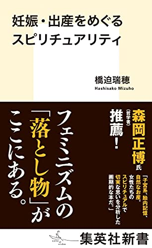
宗教社會學者的研究，分析「子宮系」與自然生產靈性論述在日本如何形成、又如何失控——包括它怎麼變成商品、怎麼讓生不出來或選擇醫療介入的女人感到被指責。
這本讀起來不會舒服，但中文世界目前沒有這樣的內部檢視——這正是它必須被列進來的理由。
吉村正與橋迫瑞穂，一個是自然分娩最堅定的臨床實踐者，一個是分析自然分娩如何滑向靈性商業化的研究者。
這兩本我都放進來。相信這條路，跟願意看它出錯的地方，並不衝突。能同時拿著這兩本書的人，才走得久。
產後的那一段
產後書通常在孕期被跳過，然後在最需要的那個月來不及買。如果妳現在還在孕期，先買一本放著。
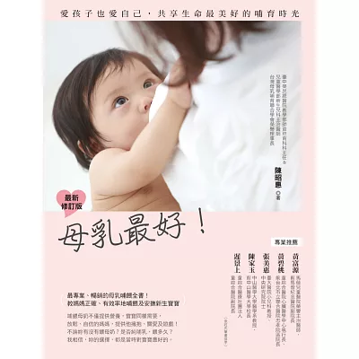
台灣母乳哺育的教科書級著作。它的好處是務實到近乎枯燥——含乳姿勢、乳腺炎處理、職場擠乳全部有圖，不談情懷。
正因為不談情懷，所以適合半夜三點崩潰的時候翻。那個時候不需要被鼓勵，需要知道手該怎麼放。
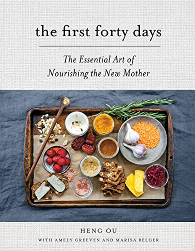
華人的坐月子傳統，寫給西方讀者。對台灣讀者來說閱讀經驗很特別——妳會看到自己家裡那套被當成智慧來介紹。
而它反過來會讓妳問：那我們自己還剩下多少？
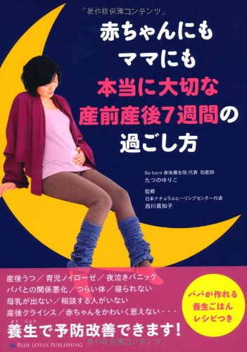
日文書裡最接近台灣「坐月子／床上げ」身體觀的一本。日本的產褥文化跟台灣是親戚，讀起來會有很多「原來他們也這樣」的時刻。
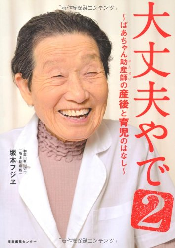
作者開業助產所七十年，用關西腔口述。整本書的語氣就是書名——沒問題的啦。如果妳的日文夠讀口述體，這是最不需要力氣就能讀完的一本。
如果妳在考慮居家生產
這一區三種語言都薄，而且薄的方式各不相同。我原本以為日文的自宅出産書會很多——查下來不是這樣。
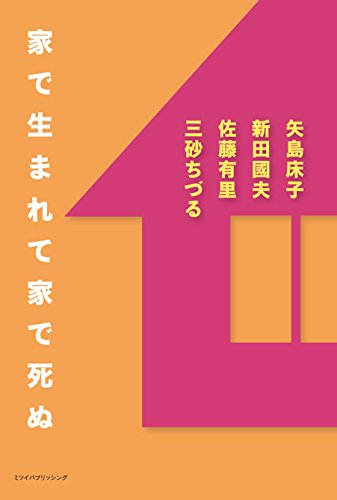
日家で生まれて家で死ぬ
三砂ちづる｜ミツイパブリッシング｜2017
在家出生，在家死去。推測仍流通
メリット
いっぱい
日自宅出産はメリットいっぱい
ヒュー｜Kindle 自出版
目前找到唯一一本以自宅出産為單一主題、寫給一般讀者的日文書。Kindle 可購買
できる
自然出産
日あなたにもできる自然出産
さかのまこと｜本の泉社
夫婦一起讀的生產知識。不易購得
欣妙自己書架上的幾本
以下這幾本來自我 2023 年整理的推薦清單。它們的目前流通狀況我這次沒有查證成功（部分書店搜尋擋掉了自動查詢），所以單獨放一區，購買前請自行確認。
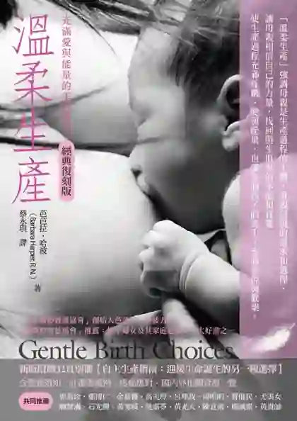
中溫柔生產
Barbara Harper｜新自然主義
台灣「溫柔生產」這個詞的源頭書之一。庫存告急
誕生
中溫柔的誕生
Frédérick Leboyer｜Birth Without Violence
從嬰兒的角度寫生產，全書像詩。六位奠基作者之外唯一有繁中版的源頭著作。
OXYTOCIN
中催產素
克絲汀・莫柏格（Kerstin Uvnäs Moberg）
催產素研究的第一線學者寫的普及版。
胎教手冊
中靈性胎教手冊
DreamBirth
用意象與夢工作進行孕期準備。
親子情
中心連心・親子情
Klaus & Kennell｜Bonding
親子連結（bonding）研究的經典。
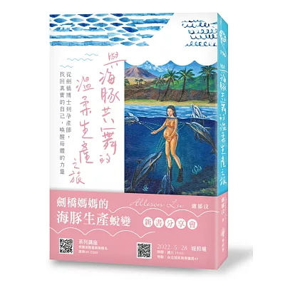
中與海豚共舞的溫柔生產之旅
盧郁汶｜橡樹林｜2022
從劍橋博士到孕產師。適合「頭腦很強、但跟身體斷線」的高學歷孕婦。可購買
溫柔生產
之路
中迎向溫柔生產之路
諶淑婷｜本事出版｜2016
台灣生產改革運動最重要的記者書寫。已絕版，只剩圖書館與二手。
四個空白
整理完之後，有四件事我認為值得單獨說。
一｜溫柔生產的思想源頭，中文世界幾乎是空的
就是文章開頭那六位，繁中譯本零本，唯一的例外是 Leboyer。這代表中文讀者接觸到的溫柔生產，多半是經過一次或兩次轉述之後的版本——轉述不一定失真，但轉述的人選了什麼、略過了什麼，讀者無從得知。
二｜催眠生產，中文一本都沒有
不是我沒找到，是真的沒有——繁中、簡體都查無。台灣媽媽如果自己找資料，只能讀英文原版；而她最容易先撞上的，往往是最舊、承諾最滿的那一版。
三｜生產創傷，中文沒有專書
英文有好幾本，日文有《産褥記》這種從產婦視角出發的書寫。中文目前查無專門處理生產創傷與修復的書。
四｜居家生產：紙本幾乎沒有，但 Kindle 上有
日本的助產所文化有書——三砂ちづる《家で生まれて家で死ぬ》、坂本フジヱ的助產所口述，都寫得很好。但以「自宅出産」為單一主題、寫給一般讀者的傳統出版品，國立國會圖書館查無。
不過這裡有一個轉折：Kindle 自出版上有。《自宅出産はメリットいっぱい》就是一本。國會圖書館查不到它，是因為 NDL 主要收錄紙本，Kindle 自出版不在裡面。
推測傳統出版社不願意出這個題目的原因之一，是它可能被解讀為鼓勵——而自出版沒有這個顧慮。
買書前要知道的三件事
一｜英文書先別去出版社官網
英國的 Pinter & Martin 已更名為 Montag & Martin。這家涵蓋了 Odent、Kitzinger、Dick-Read、Leboyer、Balaskas、Milli Hill、Rachel Reed 與整個《Why It Matters》系列——幾乎是英國孕產書的半壁江山。
2026 年 8 月查詢時，官網 174 本書全部顯示無法購買，但首頁同時掛著促銷、沒有任何停業公告。推測是換名期間的庫存中斷，不是全面絕版——但在確認之前，建議改從 Amazon 或博客來的進口書管道購買。
二｜有兩本中文書要盡快
諶淑婷《迎向溫柔生產之路》已絕版，只剩圖書館與二手。Barbara Harper《溫柔生產》庫存告急——三民已標示絕版無法訂購，博客來仍顯示有貨。
三｜Northrup 只有簡體版
Christiane Northrup 的《Women's Bodies, Women's Wisdom》繁體中文沒有，只有簡體版（上海科學普及出版社）。繁中有的是《女神歲月無痕》，但那本主題是中年女性的抗老與健康，不是孕產。推測簡體版可能有刪節，未經確認。
日文書目查證來源是日本國立國會圖書館的書目資料庫，它能證明一本書曾經出版，但不能證明它現在還買得到。因此日文書的流通狀況多標為「推測」。
中文書的庫存以 2026 年 8 月查詢當下為準。書市變動很快，購買前請再確認一次。
常見問題
溫柔生產的經典著作有中文版嗎？
多數沒有。經博客來與三民網路書店查詢（2026 年 8 月），Ina May Gaskin、Michel Odent、Sarah Buckley、Grantly Dick-Read、Sheila Kitzinger、Janet Balaskas 這六位奠基作者，繁體與簡體皆查無譯本。唯一的重要例外是 Frédérick Leboyer《Birth Without Violence》，繁中版為《溫柔的誕生》。Christiane Northrup 的《Women's Bodies, Women's Wisdom》只有簡體版。
催眠生產有中文書嗎？
沒有。經查博客來與三民全站，台灣沒有任何一本催眠生產（hypnobirthing）的中譯本或本土著作，簡體版同樣查無；博客來上的 42 筆全部是英文進口原版。日本也沒有專書——日本走的是另一條路，主流是源自法國的「ソフロロジー式分娩」，而且日本的文案寫「痛みが少ない（比較不痛）」，不寫無痛。
催眠生產會不會讓人期待落空？
四個主要流派對「痛」的承諾差很多，這是關鍵。Mongan Method 的書寫「大幅減少產痛、經常消除用藥需求」；值得注意的是，HypnoBirthing Institute 官網現在已改口寫「我們無法保證無痛生產」，但書裡的語言沒有跟著改。相對地，The Positive Birth Company 的 Siobhan Miller 明確不承諾無痛，只談理解身體怎麼運作。所以真正該問的不是「催眠生產有沒有用」，而是「妳讀到的是哪一家、它跟妳承諾了什麼」。
如果只能先讀一本，該讀哪一本？
看妳現在的狀態。還在怕，先讀陳鈺萍《生產，本該無傷》——台灣唯一由開設助產所的產科醫師寫的書。陪產的是伴侶，直接買 Penny Simkin《生產隊友》繁中版給他，那是陪產訓練的世界通用底本，台灣版還加了本地資源附錄。想把生產理解成一場通過儀式，讀 Rachel Reed《Reclaiming Childbirth as a Rite of Passage》。
英文書買不到怎麼辦？
英國出版社 Pinter & Martin 已更名為 Montag & Martin，2026 年 8 月查詢時官網全部商品顯示無法購買，但首頁仍掛著促銷、無停業公告（推測為換店期間的庫存中斷）。這家涵蓋 Odent、Kitzinger、Dick-Read、Milli Hill、Rachel Reed 等多位作者，建議改從 Amazon 或博客來進口書管道購買。
日文有哪些中文世界沒有的書？
最值得注意的是助產所文化的書寫，例如三砂ちづる《家で生まれて家で死ぬ》與坂本フジヱ開業助產所七十年的口述紀錄，中文圈沒有對應的書種。另一本是橋迫瑞穂《妊娠・出産をめぐるスピリチュアリティ》（集英社新書，2021），由宗教社會學者分析自然生產靈性論述在日本如何形成與失控——這類批判性的內部檢視，中文世界目前是空白的。
這份書單裡有絕版的書嗎？
有，而且都標出來了。諶淑婷《迎向溫柔生產之路》（本事出版，2016）在博客來與三民皆已查無，屬確認絕版。Barbara Harper《溫柔生產》三民已標示絕版、博客來仍有貨，屬庫存告急。日文書中多本標為推測絕版，因查證來源只能證明曾出版、不能證明仍流通。
為什麼這份書單不照語言分類？
因為讀者不是照語言找書的，是照自己的處境找書的。一個正在害怕的孕婦需要的是能處理恐懼的書，不是一份中文書清單。混合編排還有一個作用：把繁中的《生產隊友》和只有原文的 Ina May 放在同一段落，中文世界的翻譯落差才看得見；分開放，落差就消失了。
我想找人一起把要讀什麼、要怎麼準備討論清楚。
這正是我在做的事。書可以陪妳想，但每個人的處境不一樣——妳現在缺的可能不是一本書，而是一次把選項攤開來的對話。看溫柔生產陪產服務，或直接跟我聊聊。其他相關文章：〈生產不是病——自主生產的趨勢，與一條選擇的光譜〉、〈什麼是自主生產 freebirth〉、〈水中生產：好處、迷思與 16 個提問〉。
查證方法與資料來源
本文的書目資料以 2026 年 8 月的查詢為準，分四路查證：
- 中文書：博客來與三民網路書店全站查詢。誠品線上與讀冊生活本次無法存取，部分書籍的 ISBN 與初版年份未取得。
- 英文書：Open Library 書目 API，以及作者／出版社官網直接查詢——Rachel Reed、Sarah Buckley、The Positive Birth Company、HypnoBirthing Institute、Montag & Martin。
- 日文書：日本國立國會圖書館 NDL Search（書名、作者、出版社、年份、ISBN 皆經核對）與 honto.jp。
- 催眠生產的實證：Madden K 等（2016）《Hypnosis for pain management during labour and childbirth》Cochrane Database of Systematic Reviews, CD009356（PMID 27192949）。
關於「無中譯本」的判定。指經博客來與三民網路書店全站查詢後，繁體與簡體中文皆無該作者任何譯本。書市資料庫並非全知，若妳知道有我漏掉的中譯本，歡迎告訴我，我會更新這篇。
流通狀態標示說明。可購買 為查詢當下確認有貨；庫存告急 為部分通路已無；已絕版 為主要通路皆查無；僅原文 為確認無中譯本；推測 為書目資料庫可確認曾出版、但流通狀況未經逐筆確認。
書封圖片用於辨識所介紹的書籍，版權屬各該出版社與作者所有。本文為書目整理，各書內容的觀點屬於各該作者，不構成醫療建議，也不能取代妳與醫師、助產師的直接討論。